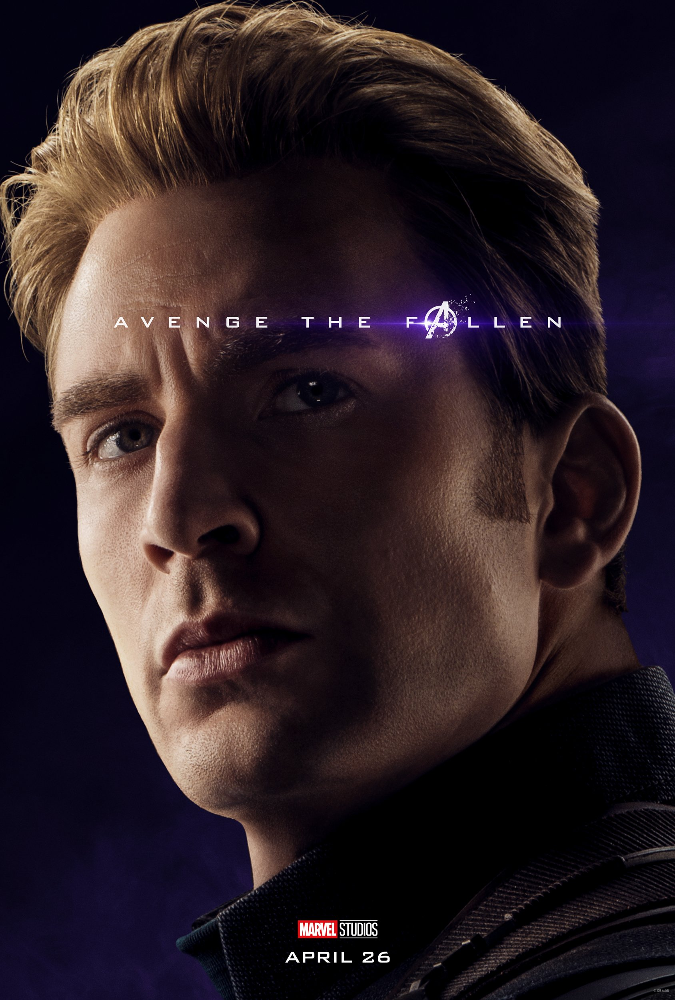
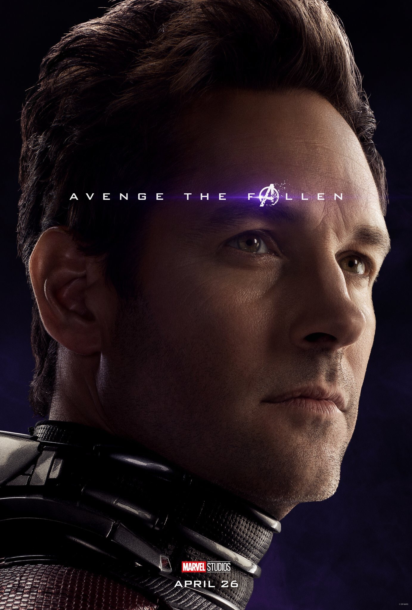

Half of all life across the universe disintegrates when Thanos activates the Infinity Gauntlet,[N 1] including Clint Barton's family. Three weeks later, Carol Danvers rescues Nebula and Tony Stark, who are stranded in space following their defeat by Thanos. They return to Earth where they rendezvous with Natasha Romanoff, Bruce Banner, Steve Rogers, Rocket, Thor, Pepper Potts and James Rhodes. The team tries to retrieve the Infinity Stones from Thanos to reverse his actions, but finds that he has destroyed them to prevent any further use. Thanos is decapitated by Thor.
years later, Banner has merged with the Hulk and Thor has become the drunken ruler of Asgard's refugees in Tønsberg, Norway. Scott Lang escapes from the quantum realm and finds Romanoff and Rogers at the Avengers' compound, theorizing that the quantum realm can allow time travel. The three propose to Stark—now raising a daughter, Morgan, with Pepper—that they travel back in time to retrieve the Infinity Stones and return them to the present to undo Thanos' actions. Stark initially rejects the idea out of concern for Morgan, but relents after reflecting upon the loss of Peter Parker. He designs a device to stabilise time travel.
The reunited Avengers split into groups for their mission. Banner, Rogers, Lang, and Stark travel to the Battle of New York[N 3] to retrieve the Time, Mind, and Space Stones. Banner visits the Sanctum Sanctorum and convinces the Ancient One to give him the Time Stone, but warns him of the consequences of removing the Stones from the past. Rogers overcomes undercover Hydra agents and his past self to retrieve the Mind Stone, but Lang and Stark's attempt fails and enables Loki to escape with the Space Stone. Rogers and Stark travel back further to the U.S. Army's Camp Lehigh in 1970[N 4] to steal both an earlier version of the Space Stone and vials of Hank Pym's size-altering Pym Particles to return home afterwards. The pair succeed, while meeting Peggy Carter and Howard Stark en route.
In Asgard, Rocket and Thor retrieve the Reality Stone from Jane Foster.[N 5] Thor encounters his mother Frigga, whose counsel restores his conviction. He obtains a past version of his hammer, Mjolnir.[N 6] Barton and Romanoff travel to Vormir for the Soul Stone. They learn from its keeper, Red Skull, that it can only be retrieved by sacrificing someone they love. After a struggle between the two, Romanoff sacrifices herself.
On Morag, Nebula and Rhodes steal the Power Stone before Peter Quill can do so.[N 7] Rhodes returns to the present with the Stone, but Nebula is left stranded behind as her cybernetic implants interface with those of her past self. Thanos exploits this and learns of present-day events. He sends the past incarnation of Nebula to the present in present-day Nebula's place. As Banner activates the Infinity Stones to resurrect everyone killed by Thanos, past Nebula uses the time machine to transport Thanos and his ship from the past to the present day. Rogers, Thor, and Stark confront Thanos, though he overpowers them, even when Rogers proves able to wield Mjolnir. Thanos summons the Black Order and his armed forces, but the revived Avengers arrive on the battlefield, along with the Sanctum Sorcerers and the armies of Asgard and Wakanda. Present-day Nebula convinces past Gamora to turn on Thanos, and in the ensuing standoff Nebula kills her past self. Stark eventually retrieves and activates the Infinity Stones, which disintegrates Thanos and his army. Stark is mortally wounded in the process.
Following a funeral for Stark, Thor appoints Valkyrie queen of Asgard and joins the Guardians of the Galaxy. After returning the Infinity Stones and Mjolnir to their original timelines, Rogers chooses to travel back and live his life in the past with Carter. He appears as an elderly man and passes his shield onto Sam Wilson.